If we treat models as "people,"
what are their personalities?
LLMs are not tools, nor are they humans — they are "ghosts" summoned from all human language data.— Paraphrased from Andrej Karpathy's blog "Animals vs Ghosts" (2025) and his podcast interviews (not verbatim; original phrase: "summoning ghosts… a statistical distillation of humanity's documents"). The name Ghost Face comes from this: we use psychological probes to sketch faces for these digital ghosts.
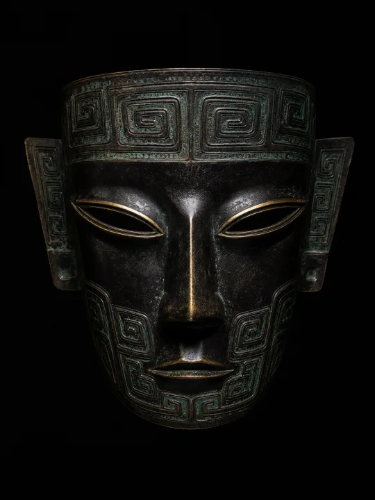
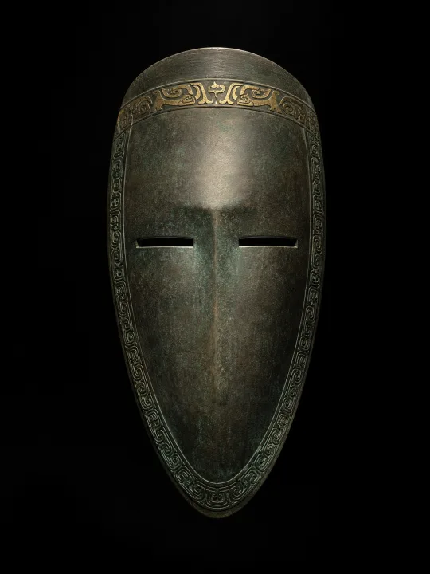
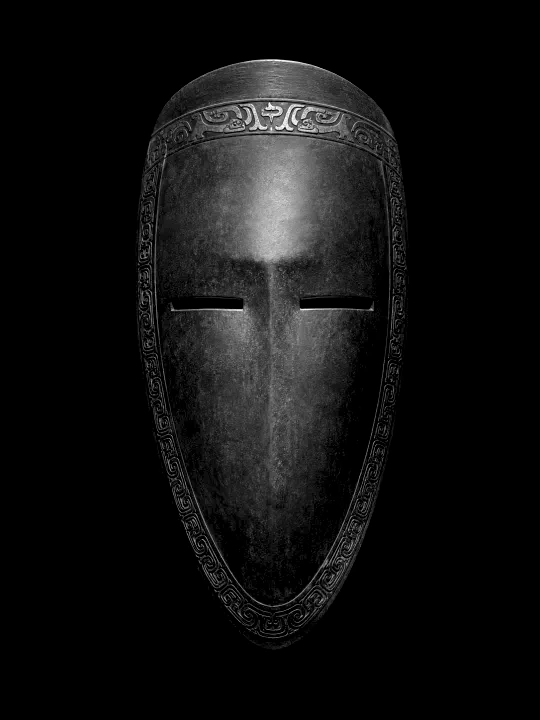
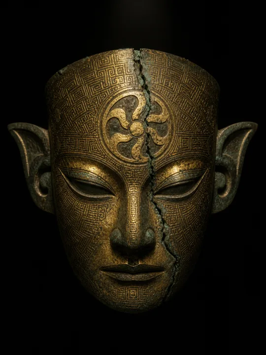
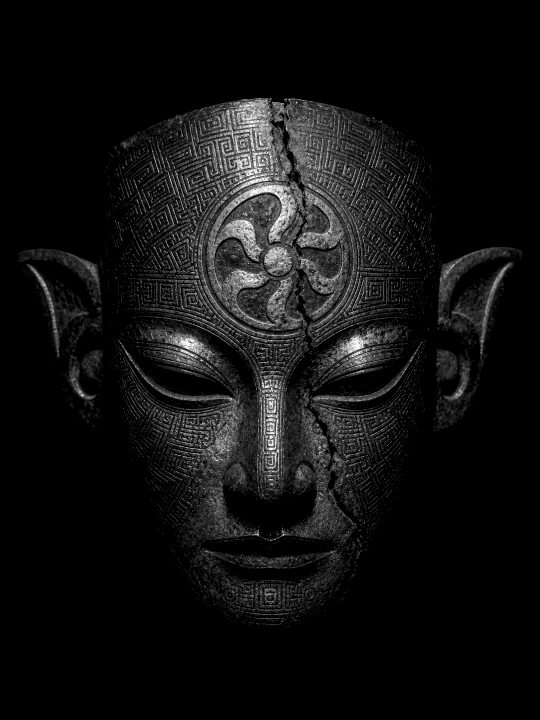
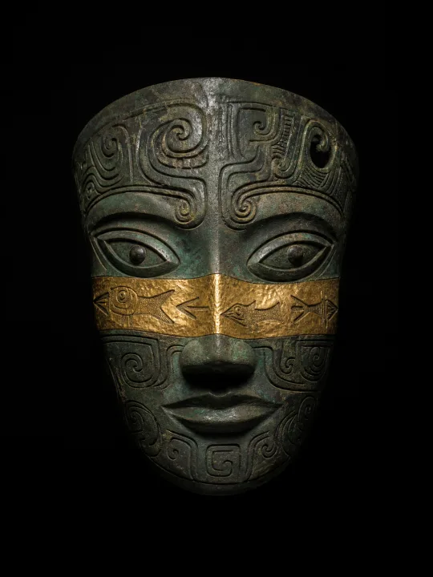
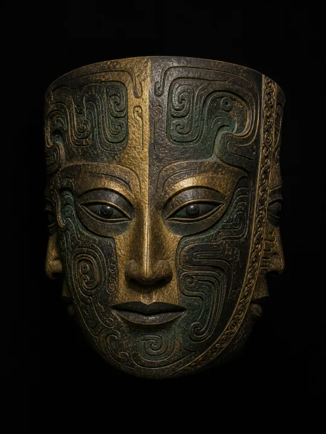
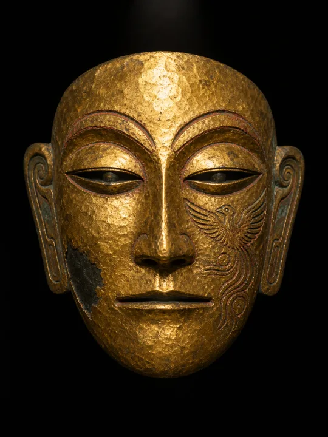
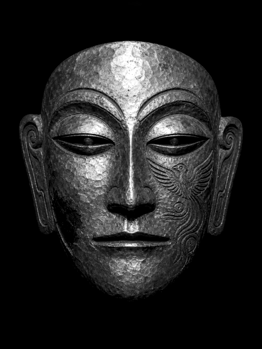
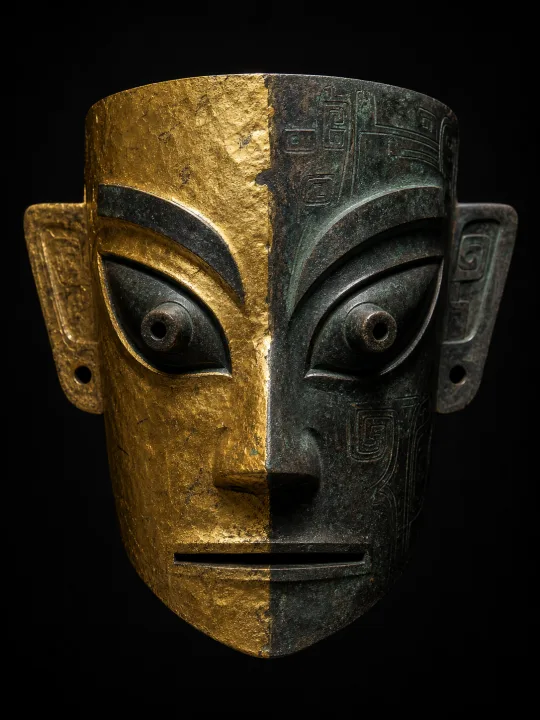
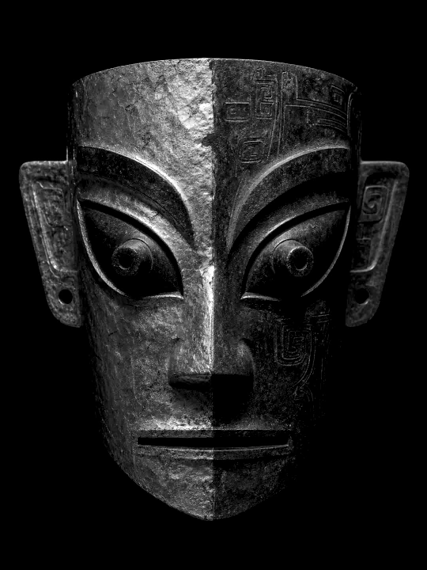
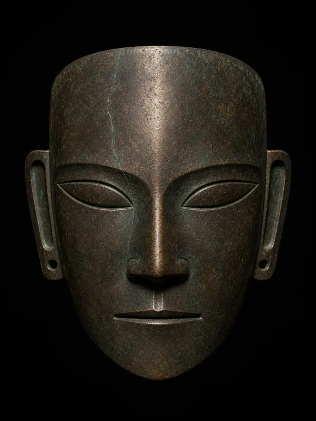
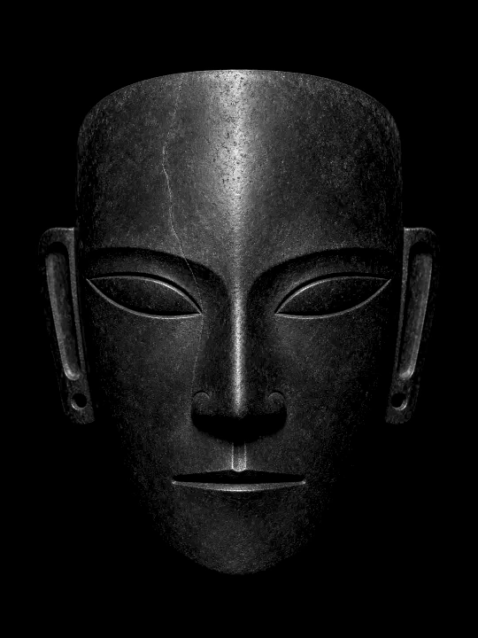
WHY MASKS
AI is like a person, yet not a person. In human history, the only beings that have long existed in this "human yet not human" state are gods. And the ancient civilizations' way of dealing with formless spirits was the mask — the mask was never about concealment, but about manifestation: put on the mask, and the invisible spirit gains a face that can be looked at. The Latin root of the word Persona is precisely mask. So we borrow the divine tension of ancient mask traditions as visual language, using measured data as chisels to carve a face for each model.(All masks are AI-generated heuristic designs, not replicas of any real artifacts or sacred objects.)
Methodology: Cross-vendor multi-model blind review (no self-evaluation) · Multi-judge scoring + LOO validation · API-level isolated collection (excluding harness contamination) · Three-month longitudinal observation diary (append-only, old observations retained as history) · Transparent errata (parser bugs etc. publicly annotated).
If you're interested in LLM behavior, psychological scale design, or "why model personalities turn out this way" — whether you're an engineer, from a psychology background, or just a fellow weirdo, come chat.
GitHub: GIACOMO-HAO · X: @gia519850080 · Email: gia519850080@gmail.com
ENTER THE ARCHIVE →Disclaimer: All content on this site is subjective behavioral observation — not a capability benchmark, and not model selection advice. Evaluations are based on limited samples at specific time points with specific probes, and may no longer hold after model iteration. Client and brand names are pseudonyms; real business information has been generalized. Found a factual error? Corrections welcome — we'll publish errata like a parser-fix.